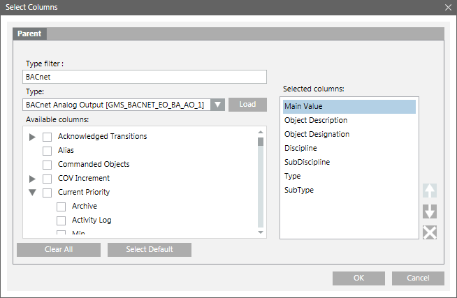
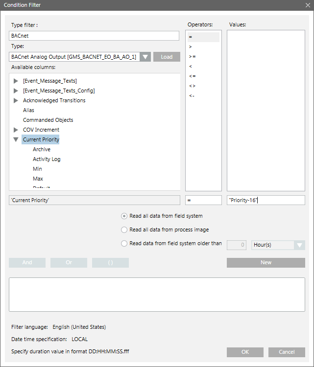

Configuring an Objects Report
Scenario: You want to configure an object’s report to fetch the details of BACnet Analog Output objects having Current Priority as 16.
- Create a new report definition with the objects table inserted.
- The Objects table is inserted with the following default set of columns—Object Description, Object Designation, Discipline, Subdiscipline, Type, Subtype, Main Value.
- Right-click the table and select Select Columns.
- The Select Columns dialog box displays.

- In the Type filter field, enter the object type description.
- The Type drop-down list displays the object types.
- On the Type drop-down list, select the object type.
- Click Load.
- The columns are listed in the Available columns list.
- Select the property and/or attribute to display as columns in the table.
- The list of selected columns displays in the Selected Columns list.
NOTE: To remove columns that you do not want displayed in the table, click . - Click OK.
- The Objects table displays.
- Configure a name filter for your report by dragging the required objects from System Browser onto the Objects table in the report definition.
In order to get the desired results, you must assign the objects for which columns are configured in your report. - (Optional) Configure a Condition filter for your report.
- Right-click the Objects table, point to Filters and select Condition Filter.
- The Condition Filter dialog box displays.

- Perform the following steps to apply the Condition filter:
a. Enter BACnet in the Type filter field to display all BACnet related objects in the Type drop-down list.
b. Select the BACnet Analog Output Object from the Type drop-down list.
c. Click the Load button. All the common columns and columns specific to the selected object display in the Available columns list.
d. Select the column on which you want to add the condition filter. In this case, select [Current_Priority].
NOTE: If you choose the column Monitoring Time Switch-on, then in the Values column, enter the value in the DD:HH:MM:SS.fff format.
e. Select = in the Operator list.
f. In the Values text field, enter "Priority - 16".
g. Click New.
h. Click OK. - The Condition filter is added to the table.
- Run the report to view the data.
- If you have applied the condition filter, the details of all analog output objects with Current Priority set to 16 display.
If no Condition filter is specified, then the details of all the analog output objects display. - Save the report definition if the configuration of columns and name filter is sufficient.
NOTE: You can enhance the report configuration at any time in the future by adding/removing columns or by setting
additional objects as name filter or by removing existing objects from the name filter.